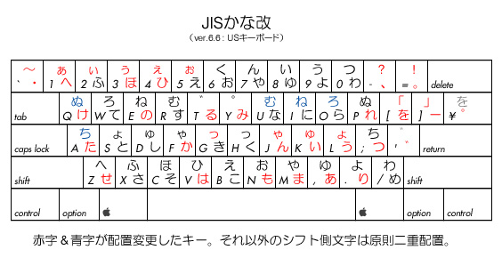
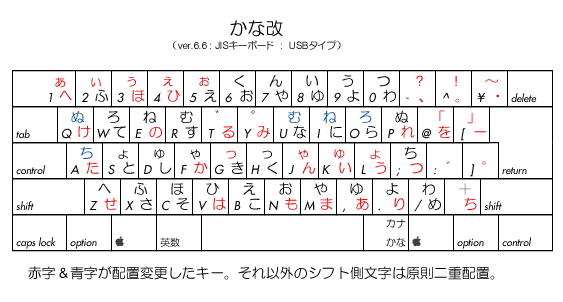

JISかな改 -- 根本的な打鍵効率の向上を
― 日本語の文法と文字の使用 頻度に基づいて最適化したJIS配列 ―
さて、話は少し戻りますが、前の章でも書いたとおり、
私は1999年ごろからキーボードの改良にも着手し始め、
『ハイパーかな入力』（かな＋）の 発表後も 満足することなく、
さらに根本的な改革が必要であると認識し、
研究開発を進めてまいりました。
その中で私は、キーボードの物理的構造から作り変える道と、
現状のキーボードを使って配列のみを並べ換える道と、
２つの道を模索していたのでした。
当初は、前者の研究のほうが面白かったため、
そちらのほうをメインにして試作を進めていましたが、
次第に、実現の程遠いものを空想するよりも
現実に今すぐにでも使えるものを完成させたいとの思いが強くなり、
だんだんと、後者の研究のほうに力点が移っていったのでした。
詳しい経緯は『JISかな改』の 添付書類に書いてありますが、
従来型のキーボードを使うのであれば、文字配列も全面的な並べ替えではなく、
むしろ、あまり変えずに最適化するべきである――との結論に達し、
比較的 多くの人に使われている JISかな配列を改良することに決めました。
改良を進めるにあたっては、
キーボード改革の先駆者であり、日本語入力研究者の第一人者である
ＮＥＣの森田先生の開発されたＭ式という入力方式を参考にしました。
とはいえ、これは 独自方式というよりは、
どちらかといえば、紛れもなくローマ字入力の一種ですから、
本来 私の指向しているものとは 全く無関係な種類のものです。
しかしやはり、良いといわれているものは、
研究しておいてよかったです。(笑)
これにより、私は かな配列の最適化にあたっても、
「広義の母音」という考え方を採り入れて、
かな入力でも それを実現することが できました。
（※「広義の子音」は 簡略拗音で 生きています）
その結果、完成したのが『JISかな改』です。
これも 完成して ちょうど１年ぐらい(*)になりますが、
その間、多少の追加変更もしましたけど、
実に満足のいく、素晴らしい出来に仕上がっています。
「かな入力版のＭ式」と言っても いいくらいかと思います。(笑)
（* 2002年執筆時点）
そして、当たり前というのか、
これがまた、簡略拗音と実によくマッチするんですね。(^o^;
これは、森田先生の日本語分析が いかに適切であるかということの
証明にもなっている(?)と思います。
さて、もちろん、『JISかな改』は、
単にそれだけの改変にとどまるものではありません。
他にも、最上段の文字の問題や右手外野のキーの問題など、
根本的な改変を行なっています。
具体的にいえば、前者に関しては、
最上段の文字を下段のキーのシフト文字としても割り当てることにより、
タッチタイピングの問題などにも対応できるようになりました。
また後者に関しては、もともとの ANSIキーボードの配置を参考にし、
記号類の置き場として再配置を行ないました。
ANSIキーボード(ＵＳキーボード)といえば、
近年のローマ字入力派の台頭により、その需要が増えているようですが、
『JISかな改』は その名に反して、JISキーボードよりも
ANSIキーボードとのほうが 相性が良いんですね。
（※なお 私は ASCIIキーボードという言い方は 好きでは ありません）
というか、たかだか右側に２つほど余分にキーを増やすため
左寄りにズレている JISキーボードを基準にしていては、
打鍵効率の根本的な向上は 実現しにくいといえます。
（右側に増やす理由が 全くない＆わからない）
いずれにしても、細かい話は また別の機会に譲るとして、
『JISかな改』は、他にも、全般的に、
文字の使用頻度や日本語の文法等を考慮して、
さらに使い勝手の良い文字配列になるよう最適化をしてあります。
以下に標準仕様(ver.6.6)のキー配列を掲載しておきます。

図１ 基本版

図２ JISキーボード用
詳しいことは、『JISかな改』を ダウンロード していたただき、
添付の書類群を参照してください。
（サポートページ には、配列に関しての より詳細な解説があります）
※関連リンク：
Macintosh： 『ResEdit 2.1.3』
Windows： キーボード用ユーティリティ＠Vector